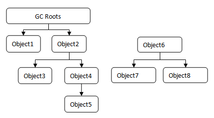

Java语言中，内存是完全交给JVM来管理的。当JVM运行时内存的堆的内存达到限制时，需要将已经不再使用的java对象进行销毁，以便回收内存，JVM是通过垃圾收集器来完成该工作的。
对象是否应当被回收
在堆里存放着Java虚拟机中几乎所有的对象实例，垃圾收集器在对堆进行回收前，首先要确定的是这对象中哪些还在使用，哪些已经不再使用了。
1）引用计数法
基本思路是给对象中添加一个引用计数器，每当有一个地方引用它时，计数器值就加1，引用失效时，计数器数值就减1；任何时刻计数器为0的对象就是不可能再被使用。
引用计数法实现简单，效率高，但是它不能很好的解决对象之间相互循环引用的问题，因此，JAVA虚拟机中并没有使用该方法；
2）可达性分析算法
JVM中，是通过可达性分析（Reachability Analysis）来判定对象是否存活的，其基本思路是通过一系列的称为“GC Roots”的对象作为起始点，从这些节点开始往下搜索，搜索所经过的路径称为引用链（“reference chain”），当一个对象到GC Roots没有任何引用链相连，则说明此对象是不可用的。

如图所示，左侧的引用链上的对象是仍然存活的，而右侧Object6, Object7, Object8由于找不到GC Roots，因此下次的垃圾回收发生时，会被收回；
在JVM中，GC Roots包括以下几种
虚拟机栈（栈帧中的本地变量表）中引用的对象；
方法区中静态属性引用的对象；
方法区中常量引用的对象；
本地方法栈JNI引用的对象；
关于引用
无论是通过引用计数算法判断对象的引用数量，还是通过可达性分析算法判断对象的引用链是否可达，判定对象是否存活都与引用有关。在JDK1.2之前，引用的定义很狭隘，如果reference类型的数据中存储的数值代表的是另外一块内存的起始地址，就称这块内存代表着一个引用。在JDK1.2之后，Java对引用进行了扩展，将引用分为强引用，软引用，弱引用和虚引用4种，这四种引用强度依次逐渐减弱。
无引用链的对象是否应该被回收
即使是在可达性分析算法中不可大的对象，也并非“非死不可”，他们暂时处于“标记待回收”阶段，要真正宣告一个对象死亡，至少要经历两次标记过程：如果对象在进行可达性分析后发现没有与GC Roots相连接的引用链，那它将会被第一次标记并且进行一次筛选，筛选的条件是此对象是否有必要执行finalize()方法，对象没有覆盖finalize()方法，或者finalize()方法已经被虚拟机调用过了，虚拟机将这两种情况都视为“没有必要执行”。
如果这个对象被判定为有必要执行finalize()方法，那么这个对象就会被放置在一个叫做E-Queue的队列之中，并在稍后由一个虚拟机自动建立的，低优先级的Finalizer线程去执行它。这里所谓的执行，指的是触发finalize()方法，但并不承诺会等待它运行结束。执行完finalize()之后，GC将会对F-Queue中的对象进行第二次标记，如果对象在finalize()方法中重新与引用链上的任何一个对象建立关联，那在第二次标记时它将被移除“即将回收”的集合，否则，该对象会被销毁；任何一个对象的finalize()方法都只会被系统自动调用一次，如果对象面临下一次回收，它的finalize()方法不会被再次执行。
回收方法区
很多人认为方法区（或者HotSpot虚拟机中的永久代）是没有垃圾收集的，Java虚拟机规范中也说过可以不要求虚拟机在方法区实现垃圾收集，而且在方法区中进行垃圾收集的性价比比较低，在堆中，尤其是在新生代中，常规应用进行一次垃圾收集一般可以回收70%~95%的空间，而永久代的垃圾回收效率远低于此。
永久代的烂机回收主要回收两部分内容：废弃常量和无用的类。回收废弃常量与回收Java堆中的对象非常类似。
以常量池中字面量的回收为例，例如一个字符串“abc”已经进入了常量池，但是当前系统总没有任何一个String对象叫做“abc”，也即没有任何String对象引用常量池中的“abc”常量，也没有其它地方引用了这个字面量。如果这时候发生内存回收，而且必要的话，这个“abc”常量就会被系统清理出常量池。常量池中的其它类，接口，方法，字段的符号引用也与此类似。
类需要同时满足下面3个条件才能算是“无用的类”：
该类所有的实例都已经被收回
加载该类的ClassLoader已经被回收；
该类对应的java.lang.Class对象没有在任何地方被引用，无法再任何其它地方通过反射访问该类的方法。
虚拟机可以对满足上述3个条件的无用类进行回收，HotSpot提供了-Xnoclassgc参数进行控制。在大量使用反射，动态代理，cglib等bytecode框架，动态生成JSP以及OSGI这类频繁自定义ClassLoaderder的场景都需要虚拟机具备类卸载的功能。
垃圾收集算法
1）标记-清除算法
最基础的收集算法是“标记-清除”（Mark-Sweep）算法，算法分为标记和清除两个阶段：首先标记出所有需要回收的对象，在标记完成之后统一回收所有被标记的对象。它的主要不足有两个：一个是效率问题，都需要清理的对象过多时，标记和清除两个过程的效率都不高；另一个是空间问题，标记清除之后会产生大量不连续的内存碎片，空间碎片太多可能会导致以后在程序运行过程中需要分配较大的对象时，无法找到足够的连续内存而不得不提前触发领一次垃圾回动作；
2）复制算法
为解决效率问题，复制算法被应用了进来。它将可用内存按容量分为大小相等的两块，每次只是用其中的一块，当这一块的内存用完了，就将还存活的对象复制到另一块上面，然后把已经使用过的内存空间一次清理掉。这样使得每次都是对整个半区进行内存回收，内存分配时页不用考虑内存碎片的复杂情况，只要移动堆顶指针，按顺序分配内存即可。该算法，运行效率比较高，但是其代价是将内存缩小为了原来的一半。
在实际使用中，新生代中的对象98%都是朝生夕死的，所以并不需要按照1:1的比例空间划分内存空间，而是将内存分为一块较大的Eden空间和两块比较小的Survivor空间，每次使用Eden和其中一块Survivor。当回收时，将Eden和Survivor中还存活着的对象一次性的复制到另外一块Survivor空间上，最后清理掉Eden和刚才用过的Survivor空间。HotSpot虚拟机默认Eden和Survivor的大小比例是8:1，每次新生代中可用内存为整个新生代容量的90%。但是，由于没法保证每次回收都有不多余10%的对象存活，当Survivor空间不足时，需要依赖老年代进行分配担保。
3）标记整理算法
复制算法在对象存活率比较高时，要进行较多的复制操作，效率会变低，更关键的是，如果不想浪费50%的空间，就需要额外的空间进行分配担保，以应对被使用的内存中所有对象都是100%存活的极端情况，因此，老年代一般不直接选用这种算法。
根据老年代的特点，有人提出了一种“标记-整理”（Mark-Compact）算法，标记过程仍然与“标记-清除”算法一样，但后续步骤不是直接对可回收对象进行清理，而是让所有存活的对象都向一端移动，然后直接清理掉端边界以外的内存。
总结
当前商业虚拟机的垃圾收集都采用“分代收集”（Generational Collection）算法，这种算法是根据对象存货周期将内存划分为几块。一般是把Java堆区分为新生代和老年代，这要可以根据各年代的特点采用最合适的收集算法。
在新生代中，每次垃圾收集时都会有大量的对象被清除，只有少量存活，因此选用复制算法，只需要付出少量存活对象的复制成本就可以完成收集。而老年代中因为对象存活率高，没有额外空间对它进行分配担保，就必须使用“标记-清理”或者“标记-整理”算法进行回收。